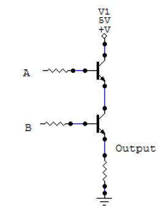
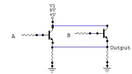

Lecture 13: Complexity vs. Simplicity Part II: Simple Systems
First, we complete last week’s content on Agile software methods. Then we finish the course lectures with a discussion of the importance of simplicity in software systems.
Agile Methods
Lecture 12 notes, starting at slide 73.
Brewer’s CAP Theorem Keynote
I had you read the slides from Brewer’s keynote where he introduced the CAP theorem. His talk focused on what it takes to make Internet systems that work 24×7 in the face of certain danger, such as network partitions.
On page 4 (in the PDF), he compares ACID and BASE…
ACID vs. BASE
ACID
- Strong consistency
- Isolation
- Focus on “commit”
- Nested transactions
- Availability?
- Conservative (pessimistic)
- Difficult evolution (schema)
BASE
- Weak consistency
- Availability first
- Best effort
- Approximate answers okay
- Aggressive (optimistic)
- Simpler
- Faster
- Easier evolution
Qualities of ACID vs. BASE Systems
ACID systems have some ideal properties, such as consistency, but they lack the scalability and resiliency of BASE systems. Also, BASE systems tend to be simpler, because they don’t have to “try as hard” to enforce consistency, etc. (but they do have to handle inconsistency…).
Qualities of ACID vs. BASE Systems
BASE systems behave more like many analogs we can find in meatspace:
- Road closures – we find alternative routes to our destinations.
- Power failures – we postpone the tasks requiring power and do other things (like actually talk to our family members).
- An unanswered phone call – we leave a message and do something else until the person calls back.
Fragile Software
Historically, software has been incredibly fragile. One thing slightly wrong and the application crashes … and sometimes takes the whole computer goes with it.
This does not scale. Anything that is rare becomes commonplace when there are enough concurrent “instances” of it. For example, hard drive failures are a daily occurrence at very large-scale Internet sites (e.g., Google). What if every hard drive failure at Google caused it to go offline?
Successful Real-World Systems
There are certainly meatspace systems with similar flaws (e.g., we have one and only one heart…). Robust systems are:
- Redundant against losses.
- Resilient against errors.
- Adaptable to change.
- As simple as possible.
Redundancy Against Losses – Nature
Many (most?) plant and animal species produce far more offspring than will live to reproduce. At the extreme end, there can be millions of seeds produced for every tree that grows to maturity.
Herd animals exhibit strength in numbers. While a percentage of the group is lost to predators or disease, the rest survive to reproduce.
Redundancy Against Losses – Accounting
Human error is common when doing arithmetic manually. Centuries ago, accountants invented double entry bookkeeping to catch most of these errors. A transaction is entered in at least two different accounts. For example, separate debits and credits are recorded, with the requirement that equity = assets - liabilities.
At all times, the sum of debits must equal the sum of credits.
It’s not foolproof – other kinds of errors can be masked by this method.
Resiliency Against Errors – Nature
DNA in cells gets damaged often, due to copying errors, chemical or radiation damage. Normally, a cell repairs the damage, so it continues to function normally.
Occasionally, the damage can’t be repaired and the cell either dies… or becomes cancerous.
Resiliency Against Errors – Power Distribution
Links in the power distribution grid fail occasionally. Normally, power is quickly rerouted through alternative links in the grid.
Occasionally, a large enough subset of the links fail, leading to a power outages, like the 2003 Northeast Blackout.
Adaptable to Change – Nature
Evolution is of course the best example of adaptability. A trait that is slightly advantageous in particular circumstances makes it more likely that the possessor of the trait will survive to reproduce and pass that trait onto a new generation.
Darwin didn’t understand the mechanism. Gregor Mendel was the first to characterize the concept of genes and their role in hereditary traits.
Adaptable to Change – Communications
As social creatures, communication is essential to our survival (as well as our mental well being). The technology we use to communicate has evolved over time, and very rapidly in the last ~150 years or so.
Simplicity
These systems work because they possess:
- simplicity appropriate to the context and
- sufficient abstraction from other mechanisms.
For example:
- Natural selection is loosely coupled to genetics.
- DNA repair is independent of how DNA encodes traits.
- Communication requires little knowledge of how the technology works.
Architectures and Modularity
It’s a universal principle that building things from modules works better than hand-crafting a system as one, giant whole.
- Smaller, simpler pieces are easier to design, evolve, test, and manufacture.
- Production of modules can be done concurrently, in different locations.
- The complexity of final assembly is reduced.
Biological systems have these qualities, too, e.g., cells and organs.
Characteristics of a Good Module
- Focused behavior.
- Exposes a clear, minimal interface to other modules.
- Both to provide service and use services of other modules.
- Replaceable:
- with copies, when the original “wears out”.
- with “upgrades” conforming to the same interface.
Think about car parts, e.g., brake pads, tires, batteries, alternators, etc.
Milestones of Manufacturing Innovations
- 1778: Honoré Blanc develops the first firearms with interchangeable parts. (It would take another ~70 years to successfully mass produce interchangeable gun parts.)
- 1803: Marc Isambard Brunel, Henry Maudslay, Simon Goodrich, and others mass produce interchangeable parts for ship assembly at Portsmouth Dockyard for the British Royal Navy during the Napoleonic War.
- Civil War: Mass produced clothing in fixed sizes. (Standard sizing developed in the 1930s.)
- 1913: Ford’s moving assembly line.
Some Successful Modular Systems
- Buildings
- Plumbing and Electricity
- Digital Electronics
- Unix
- HTTP
- Virtual Machines
Buildings
For most of human existence, each building we’ve built was a custom project, from top to bottom. Over time, more and more standardized parts have been invented, such as windows, sheet rock, roofing, 2×4s, fasteners, etc., etc.
Here is a video of Chinese construction workers building a 15-story hotel in just 6 days. All parts of the building were prefabricated offsite. Final assembly was the 6-day effort.
Plumbing and Electricity
We take running water, sewers, and always-on electrical power for granted. Yet, how is it possible for a big city to manage complex networks of fresh water pipes, sewers, and electrical power? Standards, of course.
Plumbing
Water and sewage are managed with a standardized network of pipes of particular sizes and strengths, chosen from centuries of experience (remember that the Romans built aqueducts).
Large diameter pipes carry water from reservoirs and other sources to distribution sites, where the water is divided into smaller volumes and uniform pressures, eventually terminating at individual faucets.
Electricity
Similarly, electrical power is delivered over a large network. There are high-voltage trunks that carry power from generation plants to regional and local distribution centers. From there, smaller networks and “switches” divide the power and step down the voltages all the way to individual 115V and 225V outlets.
Digital Electronics
Digital electronics is arguably the most successful technology revolution ever. Transistors were invented in the 1950s. Less than 60 years later, we have billions of them on a single chip smaller than a square inch. Almost every physical “system” you buy today has digital electronics (e.g., toasters), not just actual “computers”.
The amount of data manageable by digital systems and the processing throughput has also grown enormously, following Moore’s Law since the 1970s.
Modularity in Digital Electronics
How can we manage the complexity of billions of transistors, not to mention all the other “stuff” required for a working computer?
Digital electronics has a very effective component model for modularizing complexity. The core is a very simple concept, a communications bus where each line is either turned on (voltage > 0) or turned off (voltage = 0), corresponding to a logical 1 or 0, respectively.
Modularity in Digital Electronics
As we all know, if you put 32 of these lines together, we can convey 232 or 4.295 billion different pieces of information (depending on how we interpret each value…). For 64 bits, it’s 1.845 × 1019 or 18.45 billion billion bits of information.
Modularity in Digital Electronics
Layered on top of this bit format are simple modularity protocols, such as encoding of integer and floating point numbers, characters, opcodes for CPUs, etc.
Another dimension of this modularity is the way that transistors can be grouped into logical units, like AND and OR gates.
Circuit Symbols
Here are some standard symbols for basic electrical components.

Circuit Symbols
AND and OR gates are implemented with transistors.
| AND Gate | OR Gate |
|  |  |
Modularity in Digital Electronics
Recall that the inputs and outputs are the logical 0’s and 1’s. That simple “API” based on boolean-logic makes it easy to compose these modules together to create more sophisticated logic, up to the sophisticated behaviors of modern CPUs, GPUs, memory subsystems, etc.
The “dumb” simplicity of this interface standard is the key to its power and success!
Modularity in Digital Electronics
For a detailed technical and business analysis on the digital electronics revolution and modularity, see the book by Baldwin and Clark, “Design Rules: Volume 1: The Power of Modularity”, MIT Press, 2000. ISBN: 0262024667.
UNIX
The UNIX philosophy is to write small tools that do a focused task, then join them in pipelines to do complex behavior. Unix and derived systems treat every source or sync for data as a file, and it doesn’t even care very much if the file contents are plain text or binary!
UNIX Philosophy
Here is a contrived example bash script that counts the number of source code lines in the Akka project that explicit reference the Scala List type.
SRC_ROOT=.../AkkaWebSampleExercise/src find $SRC_ROOT -name '*.scala' | while read f do grep List $f done | wc -l
The answer is 140.
(There are many other ways to do this, too.)
UNIX Philosophy
Even though not everything fits the file metaphor well, this modularity paradigm makes it easy to construct small, reusable utilities, like find, grep, wc, etc., and write scripts using them to complete nontrivial work quickly.
In contrast, if there were no constraints to treat resources like files, even simple tasks would require nontrivial programs and only after the ad hoc details of each resource were understood.
UNIX Philosophy
In other words, the paradox of a restriction like the requirement to treat all resources uniformly (in this case, like files) actually accelerates reuse and productivity!
Digital electronics would have the same problem if there was no binary … and voltage … standards.
HTTP
HTTP, the Hypertext Transfer Protocol, has qualities similar to digital electronics.
- A simple “signaling bus”, i.e., a communication protocol.
- It is easy to build modularity protocols on top of the “bus”.
HTTP Protocol
HTTP supports only 9 request methods (a.k.a. “verbs”): HEAD, GET, POST, PUT, DELETE, TRACE, and OPTIONS. Just GET and POST are used to do the vast majority of work on the Interwebs…
These nine methods let us do everything1 we’ve been doing on the web for the last ~15 years!
1 I mean the HTTP-based world-wide web, as it was originally conceived, not including other Internet protocols that we also use, like those for email.
HTTP Protocol
HTTP request messages consist of a list of headers (key-value pairs), one per line, followed by a blank line, followed by the message body (which may be empty).
Here’s the output when requesting the Wikipedia page for HTTP, using curl1 and its --include option to also print the headers:
curl --include http://en.wikipedia.org/wiki/Hypertext_Transfer_Protocol
1 wget is similar program available on many systems.
HTTP Protocol
HTTP/1.0 200 OK Date: Sun, 28 Nov 2010 21:05:50 GMT Server: Apache Cache-Control: private, s-maxage=0, max-age=0, must-revalidate Content-Language: en Vary: Accept-Encoding,Cookie Last-Modified: Sat, 27 Nov 2010 23:19:34 GMT Content-Length: 126184 Content-Type: text/html; charset=UTF-8 Age: 15500 X-Cache: HIT from sq64.wikimedia.org X-Cache-Lookup: HIT from sq64.wikimedia.org:3128 X-Cache: MISS from sq36.wikimedia.org X-Cache-Lookup: MISS from sq36.wikimedia.org:80 Connection: close <!DOCTYPE html PUBLIC "-//W3C//DTD XHTML 1.0 Transitional//EN" "http://www.w3.org/TR/xhtml1/DTD/xhtml1-transitional.dtd"> <html xmlns="http://www.w3.org/1999/xhtml" lang="en" dir="ltr"> <head> <title>Hypertext Transfer Protocol - Wikipedia, the free encyclopedia</title> ...
HTTP Modularity
On top of this simple protocol, we can build modular structures.
- Domains
- Web sites
- Security: HTTPS
- Sessions
Some of these are standards (e.g., Domain URLs and HTTPS) and some are ad hoc (web site URLs and Session handling).
HTTP Sessions
HTTP is sessionless. People love to complain about how “inconvenient” this is, since much of the work done on the web involves a session (e.g., shopping). So, a number of schemes have been invented to simulate sessions.
- Session simulation hacks had to be invented and used.
+ HTTP is much simpler because it is stateless.
+ HTTP supports many simulation hacks just fine.
+ Lots of great alternatives have been invented.
+ One size probably wouldn’t have fit all…
Virtual Machines
The last successful modularity system I’ll mention is the virtual machine. At first, it might appear that VMs, like the JVM and the .NET CLR, don’t have the same simple “signaling busses” as digital electronics or HTTP.
In fact, they do have relatively small sets of byte codes (the VM’s instruction set) and they standardize primitive data types, like integers, floating point numbers and characters, upon which all more sophisticated data representations are built.
Virtual Machines
So, virtual machines are fertile hosting grounds for software written in a variety of languages that interoperate (relatively) seamlessly.
This ability lets the developer leverage the best benefits of each language, such as a static-typing for larger, performance-sensitive features and dynamically-typed scripting for configurability, high productivity, etc.
Some Failed (or Failing) Modular Systems
- Distributes Objects
- Web Services
- The Semantic Web?
Distributed Objects
Objects are good, right? So are distributed services. Therefore, we should shoot objects around the network!
CORBA and DCOM were binary standards for moving objects (state and behavior) between distributed services. They suffered from all the problems we’ve described.
Distributed Objects
| CORBA/DCOM Problem | AJAX+JSON Improvements (for example) |
|---|---|
| Complex protocols | Simple object notation, AJAX is a distribution model. |
| Fragile interfaces (binary) | Text-based interface is much more portable and robust as software evolves. |
| Poor performance | Just sending state (no behavior) is lighter and drives appropriate decoupling between services. |
SOA Web Services
The rise of XML in the 1990s and the failure of CORBA/DCOM led people to propose using XML-based RPC (remote procedure calls) as the distribution model.
This was a good idea, until the big middleware vendors got involved and created a giant wad of WS-* standards under the SOA (service-oriented architecture) umbrella. They were happy to sell you expensive bloatware to support it all.
In contrast, Internet companies like Google and Yahoo! use REST-based (REpresentational State Transfer) services on top of AJAX+JSON…
The Semantic Web?
(I might get in trouble for this one…) The Semantic Web is a current project of the World Wide Web Consortium (W3C) and led by Tim Berners-Lee. It wants to develop technologies to categorize the semantics of the information on the web and represent it in a way that can be machine exploitable.
I predict failure, because information just doesn’t fit into neat boxes and ontologies.
The Semantic Web?
Early crude attempts at something similar occurred during the SOA era. Early (and reasonably good) standards included WSDL (web service description language), which you would publish to describe your service for perspective clients, and SOAP (simple object access protocol), which clients would use when making service requests.
It didn’t work all that well because everybody had their own idea of the definition for their domains. It was a Tower of Babel situation…
An “Unexpected” Modular System
As we raise the levels of abstraction in our systems, some “unexpected” things emerge as modules. An interesting example is the virtualization of operating systems.
OS Virtualization
If you rent time on Amazon’s EC2, you think you have your own machine, but actually you’re running a virtual OS instance, one of several on a given machine.
Pioneers in this space, like VMWare, previously just emulated the “guest” OS on top of the “host” OS. For example, emulating Windows or Windows applications on the Mac was common in the 1990s.
Today, CPUs provide hardware-level support for virtualization, which improves performance.
Simplicity: Conclusions
Recall from last week that there are two kinds of complexity:
- Essential – Inherent in the problem domain. Unavoidable.
- Accidental – Complexity added to the implementation that is not necessary and is detrimental.
Make everything as simple as possible,
but not simpler.
Simplicity: Conclusions
The successful “meatspace” and software systems we discussed minimize accidental complexity. For example, session support in HTTP would be handy, but it is inessential.
The successful systems are always modular, with well-defined interfaces going out and coming in. These modules compose to form larger systems.
Reading Assignment
Reach Chapter 3, Architecting for Scale, in “Beautiful Architectures”, Spinellis and Gousios, O’Reilly. You can access this book on Loyola’s Safari site. This chapter discusses the design of a massively multiplayer online gaming system. The essay was written several years ago and several subsystems discussed sound like candidates for technologies we discussed in the course, such as NoSQL datastores for persistence and MapReduce for distributed computation.
You might also find chapters 1 and 2 useful, but they aren’t required reading.
“Reading” Assignment
View this great presentation from a DRW colleague, Dan North, discussing simplicity and architecture.
Mini-Project
- 11/30: Turn in a refined outline (or the first one, for some of you…) and a summary of your progress so far.
- 12/5 (Sunday): Turn in a draft of your presentation slides for the 15-minute talk. (You can still work on them until Tuesday.)
- 12/7: Last class – presentations. Turn in your writeup or code (GitHub preferred).
Other Important Dates (1/2)
- 12/10 (Friday): Last day to turn in any other remaining assignments (by Midnight…).
Other Important Dates (2/2)
- 12/14: Final Exam Due
I have decided to give you a take-home, open-book final exam. I will hand it out at the end of class next week and it will be due at the beginning of class on 12/14. (I’ll be in our classroom at the usual time.)